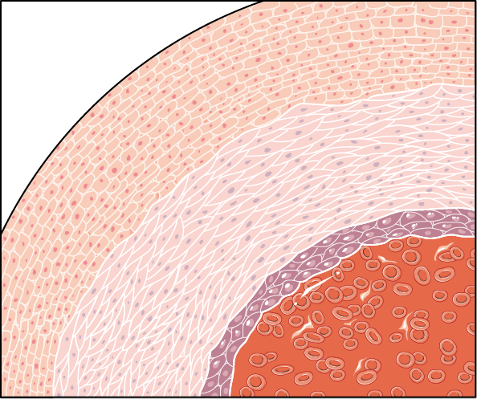

為什麼會有兩種選擇？
當冠狀動脈狹窄程度較輕（約小於 70%），通常可以先透過調整生活型態與藥物治療來控制。但是——當血管出現嚴重或重要部位的狹窄，尤其已影響心臟功能時，就需要更積極地處理。血流重建把狹窄、阻塞的血管重新打通或繞過，讓血流恢復供應心臟，醫學上稱為「血流重建（revascularization）」。

根據醫學文獻與多數專家的共識，這時通常會建議接受心導管支架（PCI）或外科繞道手術（CABG）。然而，當檢查確定是三條（含）以上血管嚴重狹窄，或左主幹狹窄時，兩種方式往往都可行——這就是為什麼您會面臨「該選哪一種」的抉擇。
沒有「絕對較好」，只有「比較適合」
兩種治療都能達到血流重建的目的，各有優缺點。哪一種比較適合，取決於您的血管條件、心臟功能、其他疾病、年齡、生活與工作型態，以及您自己最在意的事。後面的章節會帶您一步步比較與釐清。
首先，持續的藥物控制是共同的基礎
不論最後選擇支架還是繞道手術，規律服藥都是不可或缺的。冠狀動脈疾病是慢性、會持續進展的疾病，手術或支架處理的是「目前最嚴重」的狹窄，但保養血管、預防再狹窄與新病灶，仍要靠長期藥物與生活控制。
不論哪一種治療，都需要長期配合
- 抗血小板藥物（如阿斯匹靈、保栓通等）：預防血栓、保護支架或繞道血管暢通。
- 降血脂（他汀類 statin）藥物：穩定斑塊、延緩動脈硬化進展。
- 控制三高：高血壓、高血糖、高血脂的良好控制。
- 健康生活：戒菸、規律運動、均衡飲食與心臟復健。